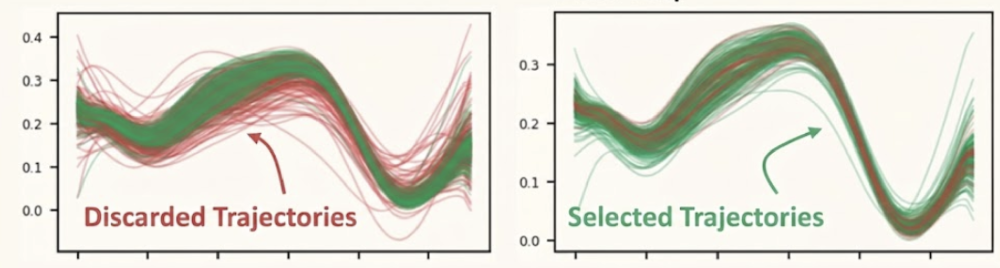

PGDG transforms a single teleoperated demonstration into a compact dataset of successful, diverse recovery behaviors: spatial randomization followed by frontier-focused sampling (Physically Grounded Sampler) and diversity-preserving curation with selective relabeling (Dataset Curator), producing robust behavior cloning policies for contact-rich bimanual manipulation.
Abstract.
Behavior cloning for contact-rich bimanual manipulation remains challenging because diverse demonstrations are expensive to collect, and even small disturbances can push the system into off-manifold states where no recovery supervision is available. We propose PGDG, a zero-shot data generation framework that expands a single demonstration into a compact dataset of physically plausible, successful, and diverse recovery behaviors without additional human labeling. PGDG iterates between a physics-grounded sampler and a dataset curator, where the curator selects informative, non-redundant, and recoverable behaviors to update the sampling distribution toward under-covered recovery modes, and the sampler draws physically plausible rollout candidates from this updated distribution and retains successful trajectories. To improve data quality at the most risky states, PGDG further applies selective short-horizon sampling-based control to relabel selected risky states with corrective actions. Across four bimanual manipulation tasks, PGDG consistently outperforms spatial-only augmentation in both simulation and zero-shot real-world transfer; for example, on RotateBox-Pitch, it improves success rate from 38% to 93% in simulation and from 35% to 82% on hardware. We also observe comparable gains when finetuning foundation models, improving success rate from 40% to 78%.
Approach.
Given a single collected demonstration, we first apply spatial randomization to produce configuration variants. For each variant, the Physically Grounded Sampler generates full-episode rollout candidates in simulation, while the Dataset Curator scores successful rollouts, removes redundant trajectories, and updates the sampling distribution toward informative recovery regions. After the final curation step, PGDG selectively relabels a small number of risky states with short-horizon CEM and adds the resulting trajectories to the dataset.
Method Overview. Starting from a single demonstration variant τE, our method iterates between the Physically Grounded Sampler and the Dataset Curator: (1) Success Sampling: the Physically Grounded Sampler samples physically feasible nominal plans using a control-point parameterization and executes rollouts in simulation; (2) Curation Reward: we use a curation reward to score successful rollouts and favor less-sampled informative regions; (3) Diversity Selection: we remove redundant trajectories by performing DPP in the DCT embedding space; (4) Sampling Distribution Update: we refit the sampling distribution with the selected subset to encourage the Physically Grounded Sampler to explore informative regions in the next iteration; (5) CEM Local Relabeling: finally, before adding trajectories to the dataset, we relabel some risky states with short-horizon CEM under a full-episode success check.
Physically Grounded Sampler and Dataset Curator
The Physically Grounded Sampler samples open-loop nominal plans and executes full episodes in simulation. The goal is to always sample at the most desirable region, neither too similar to the nominal trajectory nor too far away where the success rate drops. The Dataset Curator enforces dataset-level diversity among successful rollouts. It embeds trajectories with DCT, selects a mode-covering subset with DPP, and updates the nominal-plan distribution from the selected rollouts. It then relabels risky segments with more expert-like action labels via short-horizon CEM optimization, retaining only relabeled segments whose full-episode continuations succeed.

Data generation example. Left: all sampled rollouts/trajectories generated by the Physically Grounded Sampler; green indicates successful trajectories and red denotes failed ones. Right: the subset of trajectories retained and stored in the dataset by the Dataset Curator; red ones are discarded due to excessive similarity under DPP selection.
Interactive Demo
The embedded demo below reflects the current pgdg-demo.html behavior: record or seed one successful tip-against-wall demonstration, fit a Bezier action parameterization, and inspect the final ensemble where the dashed sampled demo trajectory and solid fitted Bezier decode are overlaid in the same coordinate frame as the generated rollouts.
Role of Diversity-Preserving Selection
Policy performance vs.\ dataset size. Success rate of depth-based ACT policies trained on datasets of increasing size generated from a single demonstration. Without diversity curation (w/o DPP), additional trajectories can be redundant and skew the training distribution, so larger datasets do not necessarily improve performance. In contrast, DPP-based subset selection yields a more balanced, non-redundant dataset and improves the success rate per collected trajectory.
Experiments.
Teleoperation setup. A GELLO-style exoskeleton is used to perform Cartesian space teaching in simulation on the Dexmate Vega bimanual platform.
Bimanual Tasks.
We selected 4 bimanual tasks to benchmark policy performance: RotateBox-Roll, RotateBox-Pitch, RotateBox-Yaw, and BarPass.
RotateBox-Roll
RotateBox-Pitch
RotateBox-Yaw
BarPass
Task demonstrations: Four bimanual manipulation tasks used to evaluate policy robustness under domain randomization.
Policy Evaluation in Simulation.
We evaluate policies in Isaac Sim and train a depth-based ACT policy. Given the dynamics and contact-critical nature of our tasks, MimicGen-style spatial randomization often fails to transfer a demonstration without additional physics-aware correction. Policies trained on our physics-grounded generated data consistently outperform those trained with spatially augmented data alone.
Policy evaluation in simulation.MimicGen denotes data generated with only spatial randomization in MimicGen style. Ours w/o Relabel denotes data generated without CEM relabeling. Ours w/o DPP denotes data generated with only the Physically Grounded Sampler (no diversity curation). Our full method achieves the highest success rates across tasks.
We also evaluated the finetuning performance for GR00T; policies finetuned on our generated data significantly outperform those finetuned on spatially augmented data
RotateBox-Row
RotateBox—Pitch
RotateBox-Yaw
BarPass
GR00T fine-tuning results (success rate, %).
Fine-tuning Data
RB-Y
RB-P
RB-R
Bar
Ours (PGDG)
87.5
77.5
72.5
70.0
Spatial (MimicGen-style)
65.0
40.0
45.0
35.0
Real-World Results.
RotateBox-Roll Demo
RotateBox-Roll
‹
›
RotateBox-Pitch Demo
RotateBox-Pitch
‹
›
RotateBox-Yaw Demo
RotateBox-Yaw
‹
›
BarPass Demo
BarPass
‹
›
Real-world deployment: Policies trained on PGDG-generated data transfer to the real Dexmate Vega platform for contact-rich bimanual manipulation. Use the arrow buttons to view multiple demonstration videos for each task.
Continuous Flipping
‹
Continuous Flipping: From a single demonstration of a box flip, our policy performs continuous flipping with recovery behaviors.
Recovery Behavior: The policy naturally learns how to recover from failure states.